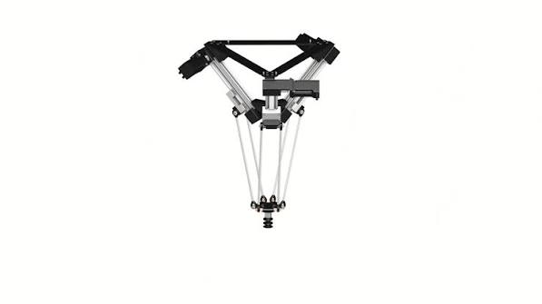
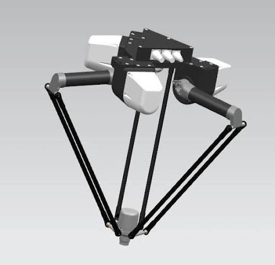
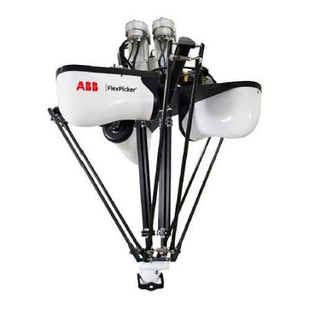
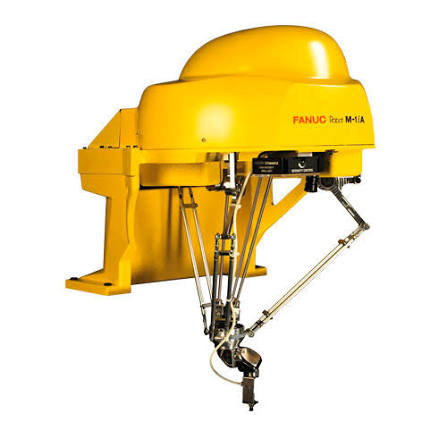
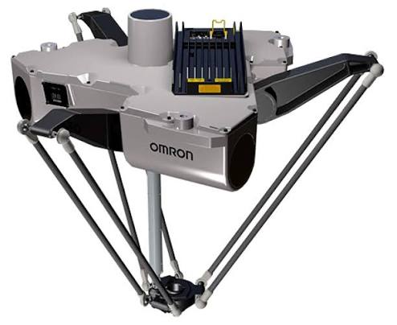

O robô delta é um tipo de robô industrial caracterizado por sua estrutura paralela, composta por três braços leves conectados a uma base fixa, permitindo movimentos extremamente rápidos e precisos. Seu espaço de trabalho possui formato semelhante a um domo, tornando-o ideal para aplicações de alta velocidade, como sistemas Pick and Place, montagem, classificação e embalagem de produtos, garantindo elevada repetibilidade e eficiência em processos automatizados.


O robô delta é um manipulador industrial de arquitetura paralela, composto por três braços conectados a uma base fixa que trabalham de forma sincronizada para movimentar o efetuador final com extrema velocidade e precisão. Seu espaço de trabalho possui formato semelhante a um domo, sendo ideal para operações que exigem ciclos rápidos e elevada repetibilidade. Devido à sua estrutura leve e eficiente, é amplamente utilizado em aplicações como Pick and Place, montagem de componentes, classificação de produtos, inspeção de qualidade e processos de embalagem. Além disso, o robô delta pode ser integrado a sistemas de automação e tecnologias da Indústria 4.0, permitindo comunicação com sensores inteligentes, esteiras transportadoras, sistemas de visão computacional e monitoramento em tempo real para otimizar a produtividade e a eficiência dos processos industriais.
Empresas líderes em automação industrial desenvolvem robôs delta para aplicações que exigem alta velocidade, precisão e repetibilidade. Esses robôs são amplamente utilizados em processos de Pick and Place, montagem, embalagem, inspeção e classificação de produtos em linhas de produção automatizadas.

A ABB é referência mundial em robótica industrial, oferecendo robôs delta de alto desempenho para aplicações de embalagem, separação, montagem e movimentação de produtos, garantindo velocidade, precisão e elevada produtividade.

Reconhecida por suas soluções avançadas em automação, a FANUC desenvolve robôs delta capazes de realizar operações de alta velocidade em sistemas Pick and Place, manipulação de alimentos, eletrônicos e produtos farmacêuticos.

A OMRON oferece robôs delta compactos e eficientes para linhas de produção automatizadas, destacando-se em aplicações de inspeção, embalagem, classificação e montagem de pequenos componentes com elevada precisão e confiabilidade.